library(ggplot2)
library(dplyr)- 1
- Pacote para visualização de dados
- 2
- Pacote para transformação de dados
Nesta aula:
Conheceremos o pacote ggplot2 para visualização de dados
Aprenderemos a criar diferentes tipos de gráficos como: de dispersão, linha, barra/coluna, entre outros
Veremos como salvar os gráficos criados
Exploraremos funções para customizar a aparência dos gráficos
Esse é um exemplo de gráfico que criaremos ao longo da aula:
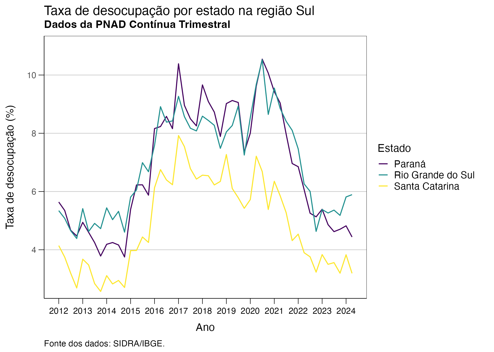
Nesta aula, utilizaremos principalmente os pacotes {ggplot2} e {dplyr}. Vamos carregá-los:
library(ggplot2)
library(dplyr)Nesta aula, utilizaremos a tabela preparada na aula sobre transformação de dados: "dados_output/sidra_4092_arrumado.rds".
Caso não tenha o arquivo da tabela que utilizaremos, você pode baixar aqui, e copiar o arquivo para a pasta dados_output do seu projeto.
Outra opção é executar o código abaixo:
download.file(
url = "https://github.com/ipeadata-lab/curso_r_intro_202409/raw/refs/heads/main/dados_output/sidra_4092_arrumado.rds",
destfile = "dados_output/sidra_4092_arrumado.rds",
mode = "wb"
)Vamos carregar a base de dados com a função read_rds():
dados <- readr::read_rds("dados_output/sidra_4092_arrumado.rds")
glimpse(dados)Rows: 1,350
Columns: 16
$ uf <chr> "Amapá", "Bahia", "Rio Grande…
$ uf_codigo <fct> 16, 29, 24, 27, 13, 28, 25, 2…
$ uf_sigla <chr> "AP", "BA", "RN", "AL", "AM",…
$ regiao <chr> "Norte", "Nordeste", "Nordest…
$ trimestre <chr> "1º trimestre 2012", "1º trim…
$ trimestre_codigo <chr> "201201", "201201", "201201",…
$ ano <dbl> 2012, 2012, 2012, 2012, 2012,…
$ trimestre_inicio <date> 2012-01-01, 2012-01-01, 2012…
$ mil_pessoas_total <dbl> 487, 10986, 2540, 2383, 2463,…
$ mil_pessoas_forca_de_trabalho <dbl> 318, 6888, 1370, 1173, 1558, …
$ mil_pessoas_forca_de_trabalho_ocupada <dbl> 278, 6086, 1211, 1041, 1386, …
$ mil_pessoas_forca_de_trabalho_desocupada <dbl> 40, 802, 159, 133, 173, 99, 1…
$ mil_pessoas_fora_da_forca_de_trabalho <dbl> 170, 4098, 1170, 1210, 905, 6…
$ prop_desocupacao <dbl> 0.12578616, 0.11643438, 0.116…
$ perc_desocupacao <dbl> 12.578616, 11.643438, 11.6058…
$ periodo_pandemia <dbl> 0, 0, 0, 0, 0, 0, 0, 0, 0, 0,…Vamos criar também um objeto contendo apenas aos dados referentes ao trimestre mais recente, para usar em alguns exemplos:
dados_tri_recente <- dados |>
filter(trimestre_inicio == max(trimestre_inicio))O ggplot2 é o principal pacote para criação de gráficos em R. Ele é baseado na gramática de gráficos, uma teoria que apresenta uma forma de descrever os componentes de um gráfico.
O ggplot2 faz parte do tidyverse.
A gramática de gráficos é composta por alguns elementos, sendo os seguintes principais para iniciar:
Dados: um data frame que contém os dados que serão apresentados
Aesthetics (atributos estéticos): mapeamento dos dados para propriedades visuais do gráfico, como eixos, cor, forma e tamanho
Geometrias: formas geométricas que representam os dados, como pontos, linhas e barras.
Vamos fazer um exemplo simples, explorando cada um desses elementos. Para iniciar o gráfico, podemos informar os dados para a função ggplot():
dados_tri_recente |>
ggplot()
A função ggplot() cria um objeto gráfico vazio. Para informar quais são as variáveis que serão mapeadas nos eixos x e y, utilizamos a função aes():
dados_tri_recente |>
ggplot() +
aes(x = perc_desocupacao, y = uf)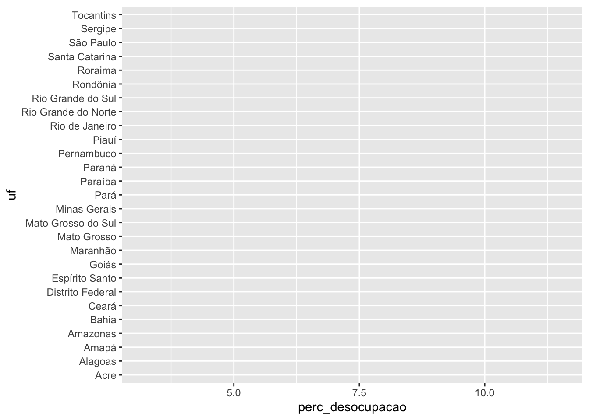
O gráfico criado apresenta os eixos, e os valores possíveis. Porém ainda não tem nenhuma geometria para representar os dados. Para adicionar uma geometria ao gráfico, utilizamos funções da família geom_*. Nesse caso, vamos utilizar a função geom_col() para criar um gráfico de colunas:
dados_tri_recente |>
ggplot() +
aes(x = perc_desocupacao, y = uf) +
geom_col()ggplot(): função para iniciar o gráfico
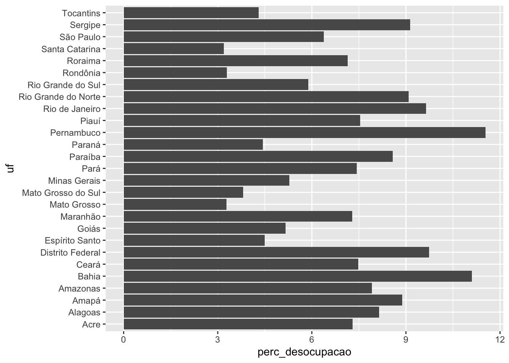
Atenção: Observe que a cada linha de código, adicionamos um + para adicionar um novo elemento ao gráfico.
A partir da função ggplot(), sempre utilizamos + para adicionar novos elementos ao gráfico.
Vamos criar alguns gráficos exploratórios com os dados de desocupação por trimestre e por estado.
Gráficos exploratórios são utilizados para entender melhor os dados, identificar padrões e tendências, e verificar a presença de outliers. Neste momento, não estamos preocupados com a estética do gráfico, mas sim com a interpretação dos dados.
Falaremos como customizar os gráficos mais adiante.
Vamos começar criando um gráfico de dispersão (conhecido também como gráfico de pontos). Para isso, utilizaremos a função ggplot() e a função geom_point().
O gráfico de dispersão é utilizado para visualizar a relação entre duas variáveis quantitativas.
dados |>
filter(uf_sigla == "BA") |>
ggplot() +
aes(x = trimestre_inicio, y = perc_desocupacao) +
geom_point()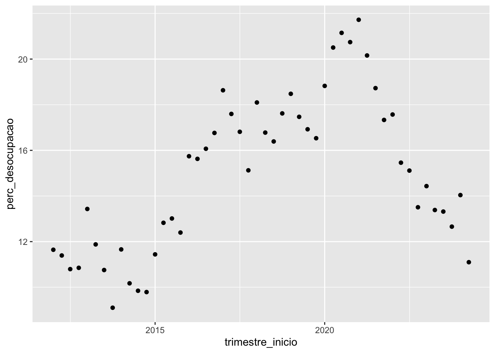
Gráficos de linha são muito utilizados para representar uma variável ao longo do tempo. A função de geometria utilizada é a geom_line().
Vamos criar um gráfico de linha para visualizar a evolução da taxa de desocupação ao longo dos trimestres para apenas um estado:
dados |>
filter(uf_sigla == "BA") |>
ggplot() +
aes(x = trimestre_inicio, y = perc_desocupacao) +
geom_line()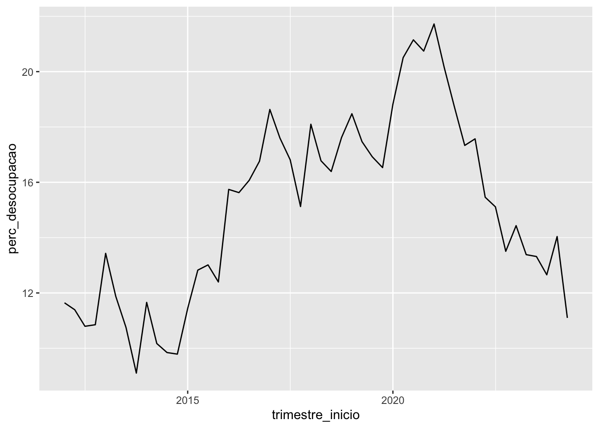
E se quisermos ver para todos os estados? Nesse caso, é importante usar um argumento adicional na função aes(), o group, para que o ggplot2 saiba que queremos uma linha para cada estado.
dados |>
ggplot() +
aes(x = trimestre_inicio, y = perc_desocupacao) +
geom_line(aes(group = uf))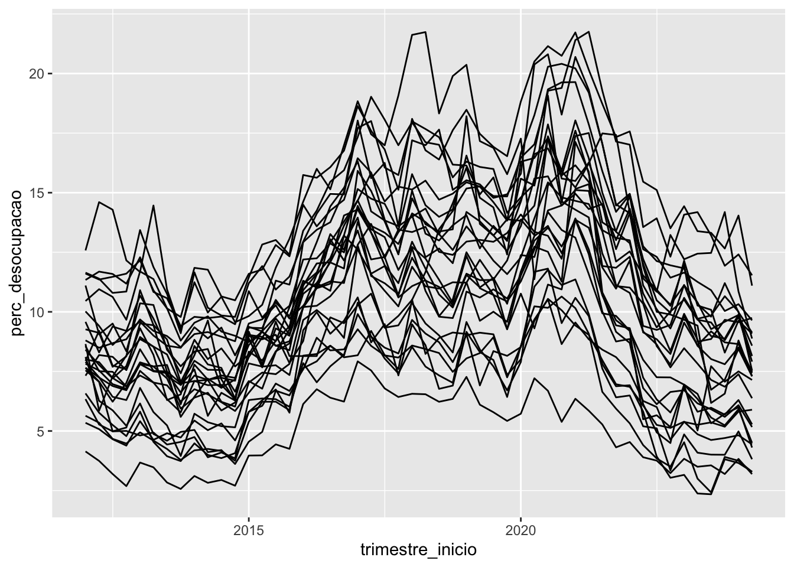
Podemos combinar diferentes geometrias no mesmo gráfico. Por exemplo, podemos adicionar um gráfico de pontos ao gráfico de linhas que criamos anteriormente:
dados |>
filter(uf_sigla == "BA") |>
ggplot() +
aes(x = trimestre_inicio, y = perc_desocupacao) +
geom_line(color = "red") +
geom_point(color = "blue")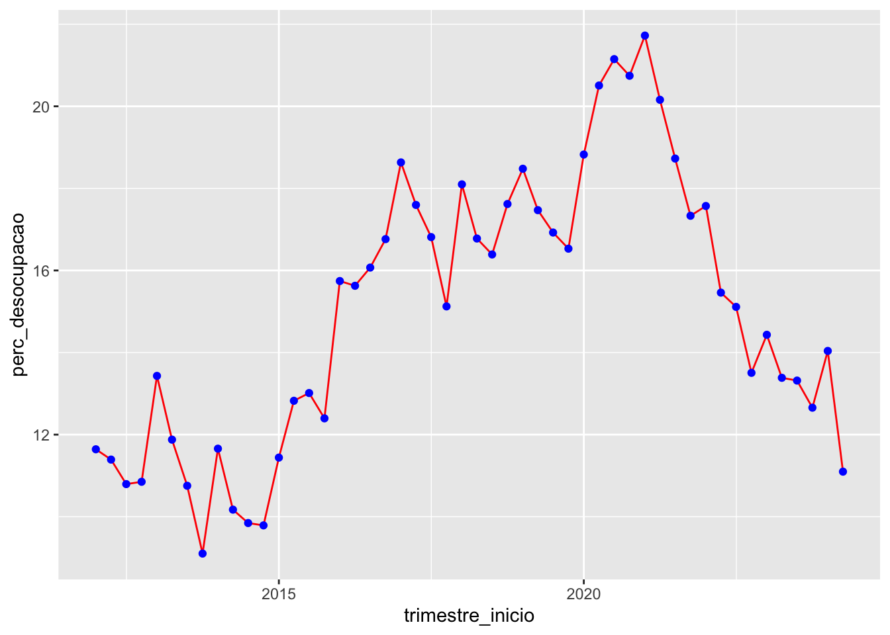
Outro ponto importante é que a ordem das geometrias importa! No exemplo acima, a linha é desenhada primeiro, e os pontos são adicionados por cima da linha. Se trocarmos a ordem das geometrias, os pontos serão desenhados primeiro, e a linha será desenhada por cima dos pontos.
dados |>
filter(uf_sigla == "BA") |>
ggplot() +
aes(x = trimestre_inicio, y = perc_desocupacao) +
geom_point(color = "blue") +
geom_line(color = "red")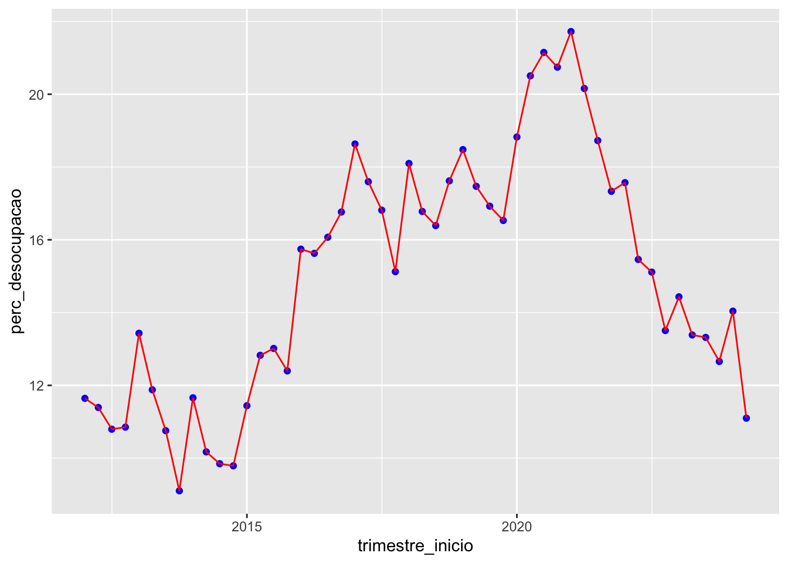
Para os gráficos de barras/colunas, podemos utilizar duas funções: geom_bar() e geom_col(). A diferença entre elas é que geom_bar() é utilizada quando queremos contar a frequência de uma variável categórica, enquanto geom_col() é utilizada quando queremos visualizar uma variável numérica.
Vamos criar um gráfico de colunas para visualizar a taxa de desocupação dos estados no trimestre mais recente. Como já temos a coluna com o valor numérico que queremos visualizar (perc_desocupacao), utilizaremos a função geom_col():
dados_tri_recente |>
ggplot() +
aes(y = uf, x = perc_desocupacao) +
geom_col()
A função geom_bar() é utilizada para representar contagens. Vamos responder a seguinte pergunta de exemplo: quantas vezes cada estado apresentou uma taxa de desocupação maior ou igual à 20%? Para isso, precisamos filtrar os dados antes de criar o gráfico, e a função geom_bar() será utilizada para contar a frequência de cada estado. Os estados que não aparecerem no gráfico é porque não tiveram nenhuma taxa de desocupação maior ou igual à 20%, no período que temos dados.
dados |>
filter(perc_desocupacao >= 20) |>
ggplot() +
aes(x = uf) +
geom_bar()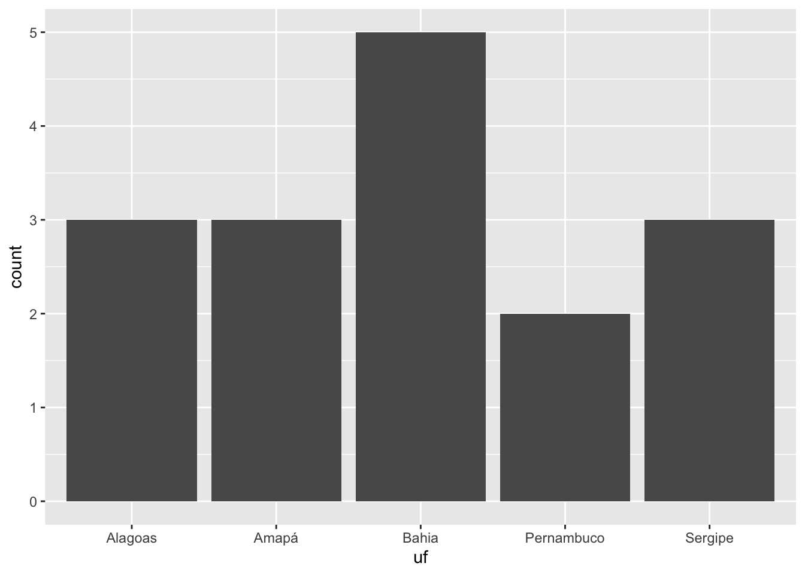
O histograma é um gráfico que mostra a distribuição de uma variável numérica. A função de geometria utilizada é a geom_histogram().
Podemos visualizar a distribuição da variável perc_desocupacao, considerando todos os trimestres:
dados |>
ggplot() +
aes(x = perc_desocupacao) +
geom_histogram(binwidth = 1)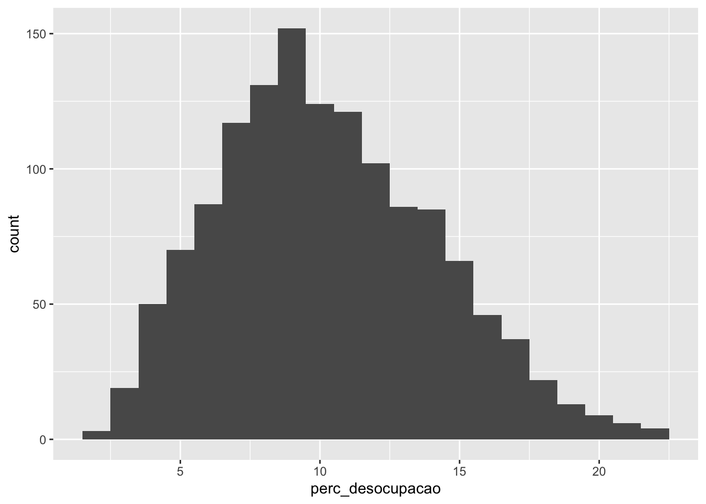
Outro tipo de gráfico que pode ser utilizado para visualizar a distribuição de uma variável numérica é o gráfico de densidade. A função de geometria utilizada é a geom_density().
dados |>
ggplot() +
aes(x = perc_desocupacao) +
geom_density()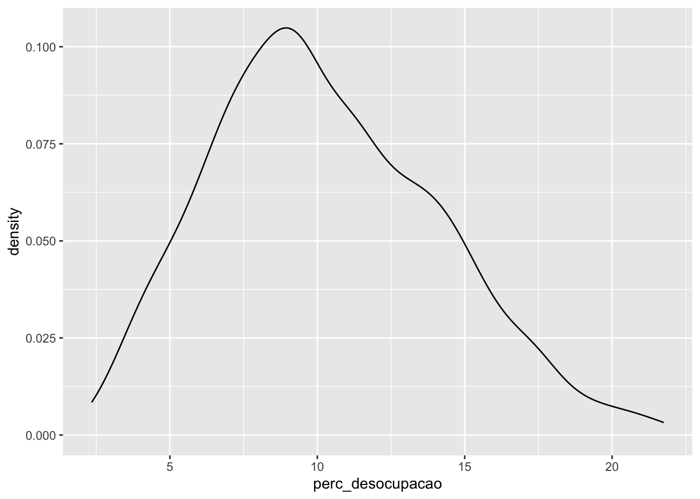
O gráfico de caixa1 (mais conhecido como boxplot) é utilizado para visualizar a distribuição de uma variável numérica. Esse é um tipo de gráfico que não é muito comum vermos no dia-a-dia, mas é muito usado em pesquisas e análises estatísticas.
Este gráfico apresenta informações como a mediana, quartis, valores mínimos e máximos, e possíveis outliers.
Para criar um boxplot, utilizaremos a função de geometria geom_boxplot()
dados |>
ggplot() +
aes(y = regiao, x = perc_desocupacao) +
geom_boxplot()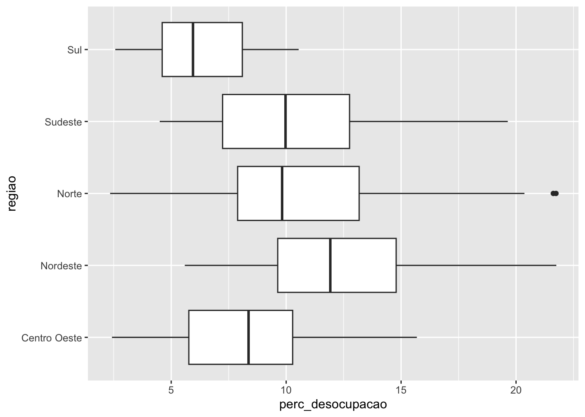
Podemos adicionar mais uma variável ao gráfico, utilizando a cor para representá-la. Para isso, utilizamos os argumentos fill ou color dentro da função aes():
fill: preenche a área com a cor. Útil para gráficos de barras e colunas, por exemplo.color: adiciona a cor ao contorno. Útil para gráficos de linhas e pontos, por exemplo.Vamos ver um exemplo de gráfico de colunas apresentado anteriormente, com preenchimento (fill) por região:
dados_tri_recente |>
ggplot() +
aes(x = perc_desocupacao, y = uf) +
geom_col(aes(fill = regiao))regiao, com o argumento fill. Isso precisa estar DENTRO do aes().
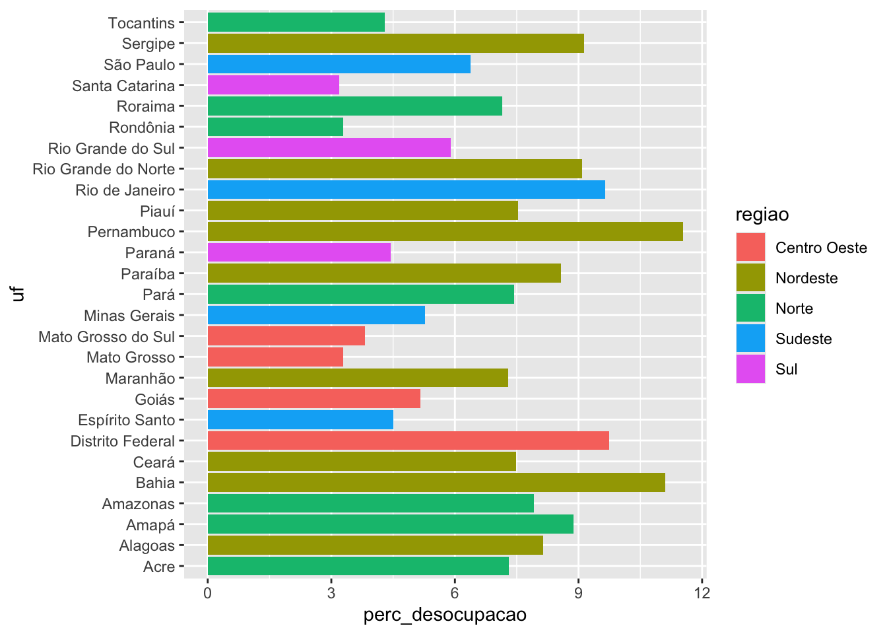
Vamos ver um exemplo de gráfico de linhas apresentado anteriormente, adicionamos pontos e usamos a cor para representar o período que consideramos como pandemia (color):
dados |>
filter(uf_sigla == "BA") |>
mutate(periodo_pandemia = as.character(periodo_pandemia)) |>
ggplot() +
aes(x = trimestre_inicio, y = perc_desocupacao) +
geom_line() +
geom_point(aes(color = periodo_pandemia))periodo_pandemia, com o argumento color. Isso precisa estar DENTRO do aes().
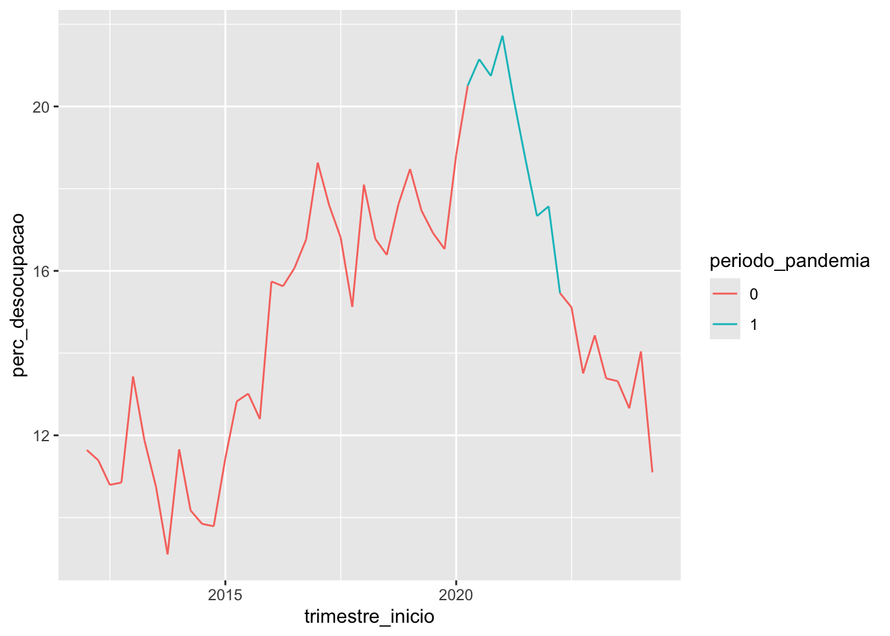
As facetas (ou facet) são utilizadas para dividir o gráfico em subgráficos, com base nos valores de uma ou duas variáveis categóricas.
Existem duas funções principais para criar facetas: facet_wrap() ou facet_grid().
A função facet_wrap() cria uma faceta para cada categoria da variável:
dados |>
ggplot() +
aes(x = trimestre_inicio, y = perc_desocupacao) +
geom_line(aes(group = uf)) +
facet_wrap(~regiao)facet_wrap() para criar um gráfico para cada categoria da variável regiao.
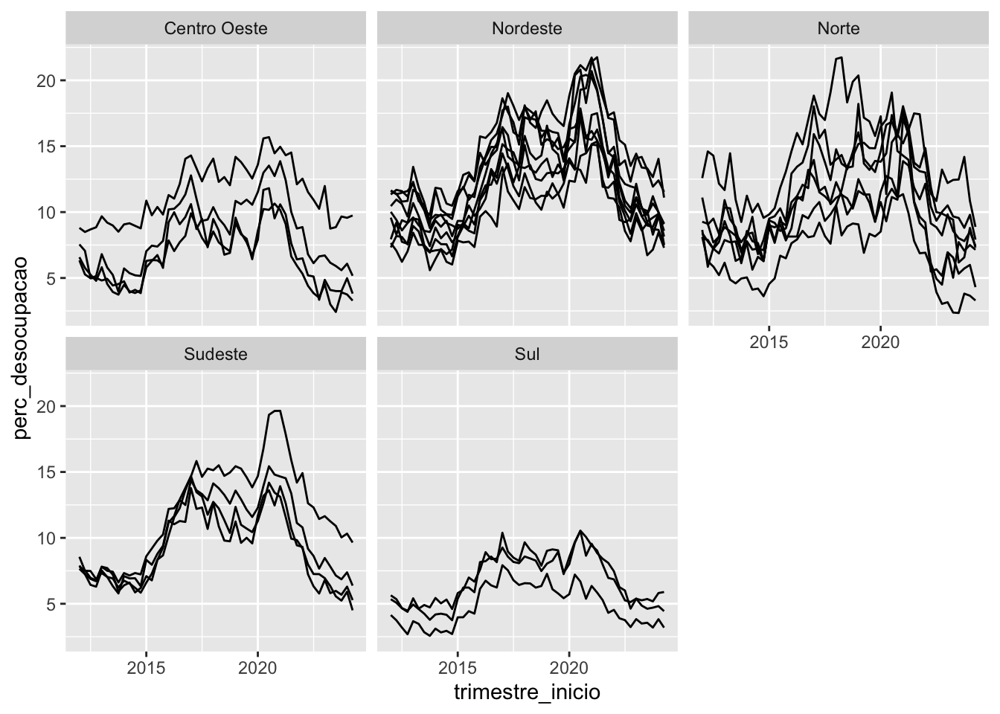
Veja que o gráfico é dividido em 5 subgráficos, um para cada região do Brasil. Os valores dos eixos x e y são os mesmos para todos os subgráficos, possibilitando a comparação entre eles.
Já a função facet_grid() cria um gráfico para cada combinação de categorias de duas variáveis.
dados |>
ggplot() +
aes(y = perc_desocupacao) +
geom_boxplot() +
facet_grid(regiao ~ periodo_pandemia)facet_grid() para criar um gráfico para cada combinação de categorias das variáveis regiao e periodo_pandemia.
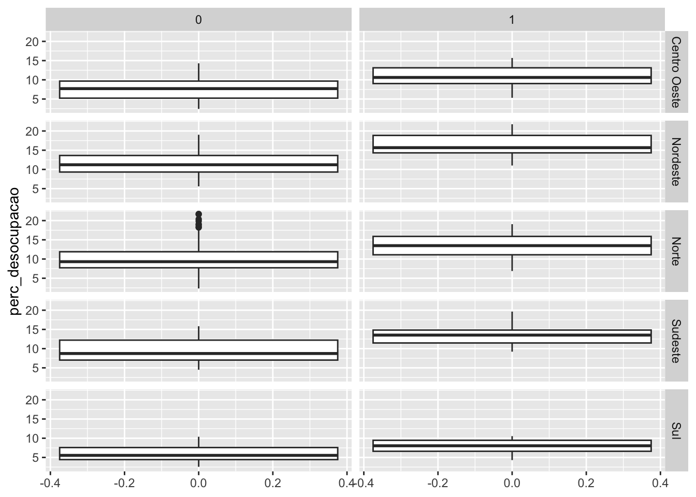
A partir dos exemplos apresentados, podemos listar alguns pontos importantes sobre o ggplot2:
A função ggplot() cria um objeto gráfico vazio
Podemos usar o pipe (%>% ou |>) para encadear as funções até a função ggplot().
A partir da função ggplot(), não usamos mais o pipe (%>% ou |>), e sim o +.
A função aes() define o mapeamento estético (aesthetics mapping) entre as colunas da base de dados (variáveis) e os elementos visuais do gráfico (eixo, posição, cor, tamanho, etc).
Os atributos estéticos (aes) x e y representam os eixos x e y do gráfico.
Para adicionar uma geometria ao gráfico, usamos alguma função da família geom_*.
Podemos usar mais do que uma geometria no mesmo gráfico, e a ordem importa!
Até aqui, discutimos como criar gráficos exploratórios, e vimos que o ggplot2 nos permite criar gráficos de forma simples e rápida.
Após criar um gráfico exploratório que nos ajuda a entender os dados, podemos customizá-lo para apresentar a outras pessoas, ou para publicar em relatórios e artigos.
Vamos ver algumas formas de customizar os gráficos criados, partindo do gráfico a seguir:
grafico_base <- dados_tri_recente |>
ggplot() +
aes(y = uf, x = perc_desocupacao) +
geom_col()
grafico_base
O ggplot ordena variáveis de texto em ordem alfabética. No exemplo acima, as barras estão ordenadas de acordo com a ordem alfabética dos estados: o Acre aparece primeiro, e o Tocantins, por último.
Podemos ordenar as barras do gráfico de colunas de acordo com o valor da variável numérica utilizada (neste caso, perc_desocupacao).
Para isso, precisaremos transformar a variável de texto uf em uma variável categórica ordenada (ou seja, um fator/factor).
Os fatores são utilizados para representar variáveis categóricas no R. Essas variáveis podem ser ordenadas ou não.
Eles são úteis para controlar a ordem de exibição de variáveis categóricas em gráficos, tabelas e modelos estatísticos.
Vamos criar um exemplo simples, criando uma tabela com a escolaridade de um grupo de pessoas:
escolaridade <- tibble(
nome = c(
"Maria",
"João",
"Pedro",
"Ana",
"José",
"Carlos",
"Mariana",
"Lucas"
),
escolaridade_concluida = c(
"Pós-graduação",
"Ensino Médio",
"Ensino Fundamental II",
"Ensino Fundamental I",
"Ensino Fundamental I",
"Sem instrução",
"Ensino Técnico",
"Graduação"
)
)Se ordenarmos a tabela pela variável escolaridade_concluida, veremos que a ordem é alfabética:
escolaridade |>
arrange(escolaridade_concluida)# A tibble: 8 × 2
nome escolaridade_concluida
<chr> <chr>
1 Ana Ensino Fundamental I
2 José Ensino Fundamental I
3 Pedro Ensino Fundamental II
4 João Ensino Médio
5 Mariana Ensino Técnico
6 Lucas Graduação
7 Maria Pós-graduação
8 Carlos Sem instrução Para que, por exemplo, a variável escolaridade_concluida seja ordenada de acordo com a ordem de escolaridade, podemos transformá-la em um fator ordenado, utilizando a função factor(), e indicando quais são os níveis (levels) de escolaridade, na ordem que queremos que apareçam:
escolaridade |>
mutate(
escolaridade_concluida_fct = factor(
escolaridade_concluida,
levels = c(
"Sem instrução",
"Ensino Fundamental I",
"Ensino Fundamental II",
"Ensino Médio",
"Ensino Técnico",
"Graduação",
"Pós-graduação"
)
)
) |>
arrange(escolaridade_concluida_fct)escolaridade_concluida_fct usando a função factor()
escolaridade_concluida_fct
# A tibble: 8 × 3
nome escolaridade_concluida escolaridade_concluida_fct
<chr> <chr> <fct>
1 Carlos Sem instrução Sem instrução
2 Ana Ensino Fundamental I Ensino Fundamental I
3 José Ensino Fundamental I Ensino Fundamental I
4 Pedro Ensino Fundamental II Ensino Fundamental II
5 João Ensino Médio Ensino Médio
6 Mariana Ensino Técnico Ensino Técnico
7 Lucas Graduação Graduação
8 Maria Pós-graduação Pós-graduação A função factor() é do R base, ou seja, não precisamos carregar nenhum pacote adicional para utilizá-la. Porém o pacote {forcats} (que faz parte do {tidyverse}) apresenta funções mais avançadas para trabalhar com fatores, como a função fct_reorder() que veremos a seguir.
Para isso, precisamos fazer uma transformação na variável uf, para que ela seja ordenada de acordo com o valor de perc_desocupacao. Isso deve ser feito antes de criar o gráfico.
Vamos ordenar as barras do gráfico anterior, de acordo com o valor de perc_desocupacao. Para isso, utilizamos a função fct_reorder() do pacote {forcats}.
A função fct_reorder() recebe dois argumentos:
No caso do nosso exemplo, queremos ordenar as barras de acordo com o valor de perc_desocupacao, e a variável categórica que queremos ordenar é uf. Portanto, usaremos fct_reorder(uf, perc_desocupacao).
grafico_ordenado <- dados_tri_recente |>
mutate(uf_fct = forcats::fct_reorder(uf, perc_desocupacao)) |>
ggplot() +
aes(y = uf_fct, x = perc_desocupacao) +
geom_col()
grafico_ordenadouf_fct que será utilizada para ordenar as barras de acordo com o valor de perc_desocupacao.
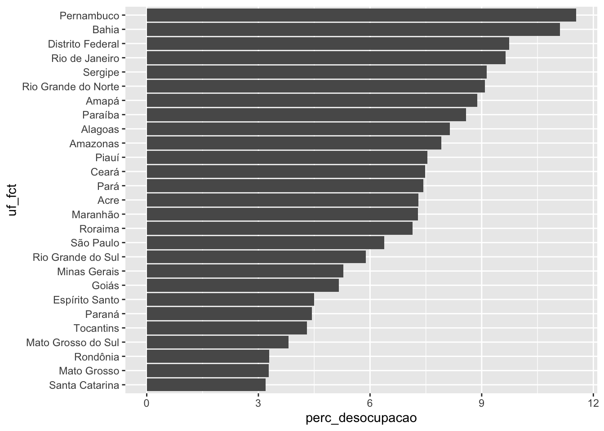
Por padrão, o gráfico está sem título, e com o nome das colunas nos eixos x e y e legendas.
O ggplot2 permite adicionar títulos e rótulos aos gráficos, utilizando a função labs(). Essa função apresenta vários argumentos, que podem ser divididos em dois grupos:
Elementos com informações do gráficos: sempre estão disponíveis. Ex: title, subtitle, caption…
Elementos relacionados aos atributos estéticos: dependem dos mapeamentos feitos com a função aes(). Ex: x, y, fill, color…
Vamos adicionar um título ao gráfico anterior, e rótulos para os eixos x e y:
grafico_com_labels <- grafico_ordenado +
labs(
title = "Taxa de desocupação por estado",
subtitle = "Dados para o 2º trimestre 2024",
caption = "Fonte: Dados referentes à PNAD Contínua Trimestral, obtidos no SIDRA/IBGE.",
x = "Taxa de desocupação (%)",
y = "Estado",
)
grafico_com_labels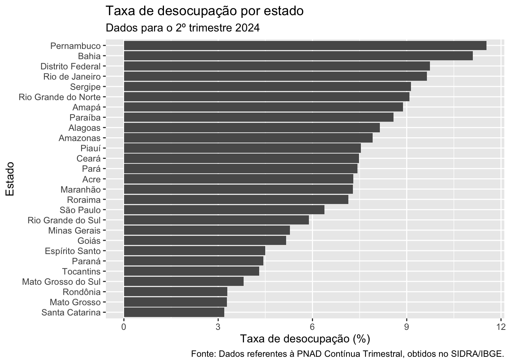
O {ggplot2} apresenta várias funções para trabalhar com as escalas dos gráficos. Essas funções apresentam o prefixo scale_.
Vamos explorar algumas dessas funções para trabalhar com escalas, mas lembre-se que existem muitas outras funções para customizar as escalas dos gráficos.
ls("package:ggplot2") |>
stringr::str_subset("^scale_") [1] "scale_alpha" "scale_alpha_binned"
[3] "scale_alpha_continuous" "scale_alpha_date"
[5] "scale_alpha_datetime" "scale_alpha_discrete"
[7] "scale_alpha_identity" "scale_alpha_manual"
[9] "scale_alpha_ordinal" "scale_color_binned"
[11] "scale_color_brewer" "scale_color_continuous"
[13] "scale_color_date" "scale_color_datetime"
[15] "scale_color_discrete" "scale_color_distiller"
[17] "scale_color_fermenter" "scale_color_gradient"
[19] "scale_color_gradient2" "scale_color_gradientn"
[21] "scale_color_grey" "scale_color_hue"
[23] "scale_color_identity" "scale_color_manual"
[25] "scale_color_ordinal" "scale_color_steps"
[27] "scale_color_steps2" "scale_color_stepsn"
[29] "scale_color_viridis_b" "scale_color_viridis_c"
[31] "scale_color_viridis_d" "scale_colour_binned"
[33] "scale_colour_brewer" "scale_colour_continuous"
[35] "scale_colour_date" "scale_colour_datetime"
[37] "scale_colour_discrete" "scale_colour_distiller"
[39] "scale_colour_fermenter" "scale_colour_gradient"
[41] "scale_colour_gradient2" "scale_colour_gradientn"
[43] "scale_colour_grey" "scale_colour_hue"
[45] "scale_colour_identity" "scale_colour_manual"
[47] "scale_colour_ordinal" "scale_colour_steps"
[49] "scale_colour_steps2" "scale_colour_stepsn"
[51] "scale_colour_viridis_b" "scale_colour_viridis_c"
[53] "scale_colour_viridis_d" "scale_continuous_identity"
[55] "scale_discrete_identity" "scale_discrete_manual"
[57] "scale_fill_binned" "scale_fill_brewer"
[59] "scale_fill_continuous" "scale_fill_date"
[61] "scale_fill_datetime" "scale_fill_discrete"
[63] "scale_fill_distiller" "scale_fill_fermenter"
[65] "scale_fill_gradient" "scale_fill_gradient2"
[67] "scale_fill_gradientn" "scale_fill_grey"
[69] "scale_fill_hue" "scale_fill_identity"
[71] "scale_fill_manual" "scale_fill_ordinal"
[73] "scale_fill_steps" "scale_fill_steps2"
[75] "scale_fill_stepsn" "scale_fill_viridis_b"
[77] "scale_fill_viridis_c" "scale_fill_viridis_d"
[79] "scale_linetype" "scale_linetype_binned"
[81] "scale_linetype_continuous" "scale_linetype_discrete"
[83] "scale_linetype_identity" "scale_linetype_manual"
[85] "scale_linewidth" "scale_linewidth_binned"
[87] "scale_linewidth_continuous" "scale_linewidth_date"
[89] "scale_linewidth_datetime" "scale_linewidth_discrete"
[91] "scale_linewidth_identity" "scale_linewidth_manual"
[93] "scale_linewidth_ordinal" "scale_radius"
[95] "scale_shape" "scale_shape_binned"
[97] "scale_shape_continuous" "scale_shape_discrete"
[99] "scale_shape_identity" "scale_shape_manual"
[101] "scale_shape_ordinal" "scale_size"
[103] "scale_size_area" "scale_size_binned"
[105] "scale_size_binned_area" "scale_size_continuous"
[107] "scale_size_date" "scale_size_datetime"
[109] "scale_size_discrete" "scale_size_identity"
[111] "scale_size_manual" "scale_size_ordinal"
[113] "scale_type" "scale_x_binned"
[115] "scale_x_continuous" "scale_x_date"
[117] "scale_x_datetime" "scale_x_discrete"
[119] "scale_x_log10" "scale_x_reverse"
[121] "scale_x_sqrt" "scale_x_time"
[123] "scale_y_binned" "scale_y_continuous"
[125] "scale_y_date" "scale_y_datetime"
[127] "scale_y_discrete" "scale_y_log10"
[129] "scale_y_reverse" "scale_y_sqrt"
[131] "scale_y_time" O {ggplot2} utiliza uma paleta de cores padrão bem colorida, observada nos exemplos anteriores. Porém podemos mudar a paleta de cores, ou até mesmo criar uma paleta de cores personalizada.
As funções de escalas de cores dependerão do tipo de atributo estético utilizado: fill ou color.
Quando usamos o atributo fill, utilizamos as funções scale_fill_*(). Quando usamos o atributo color, utilizamos as funções scale_color_*().
Outro ponto importante é que as funções de escalas de cores dependem do tipo de variável que estamos mapeando.
Por exemplo, se a variável mapeada é categórica, podemos usar a função scale_fill_viridis_d() para preencher as barras com uma paleta de cores viridis. Utilizando o exemplo que estamos criando, a região pode ser mapeada no atributo fill:
dados_tri_recente |>
ggplot() +
aes(y = uf, x = perc_desocupacao) +
geom_col(aes(fill = regiao)) +
scale_fill_viridis_d() 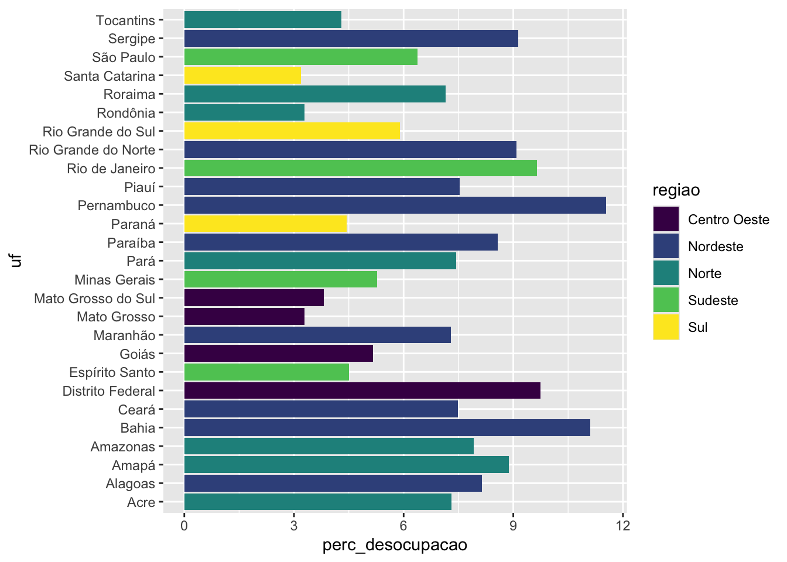
Mas se a variável mapeada é numérica, podemos usar a função scale_fill_viridis_c(). O exemplo abaixo apresenta um gráfico similar, mas mapeando a variável perc_desocupacao no atributo fill:
dados_tri_recente |>
ggplot() +
aes(y = uf, x = perc_desocupacao) +
geom_col(aes(fill = perc_desocupacao)) +
scale_fill_viridis_c()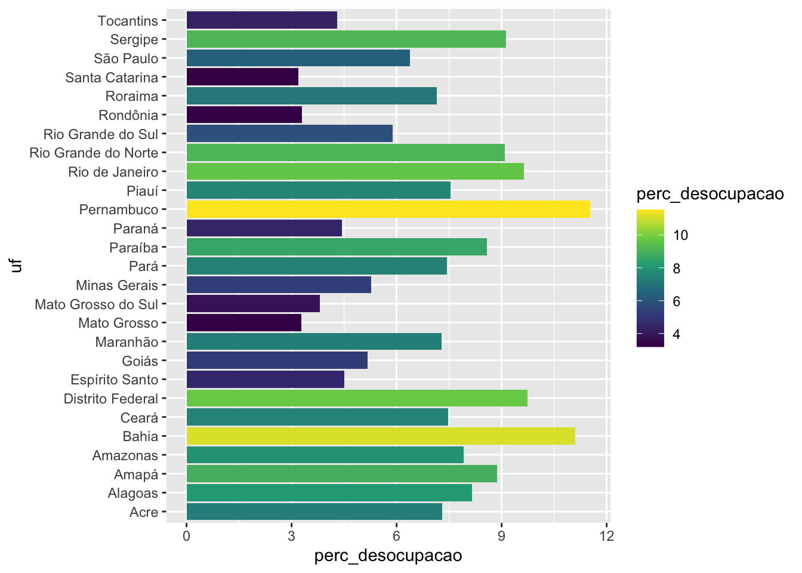
color:ls("package:ggplot2") |>
stringr::str_subset("^scale_") |>
stringr::str_subset("color") [1] "scale_color_binned" "scale_color_brewer" "scale_color_continuous"
[4] "scale_color_date" "scale_color_datetime" "scale_color_discrete"
[7] "scale_color_distiller" "scale_color_fermenter" "scale_color_gradient"
[10] "scale_color_gradient2" "scale_color_gradientn" "scale_color_grey"
[13] "scale_color_hue" "scale_color_identity" "scale_color_manual"
[16] "scale_color_ordinal" "scale_color_steps" "scale_color_steps2"
[19] "scale_color_stepsn" "scale_color_viridis_b" "scale_color_viridis_c"
[22] "scale_color_viridis_d" fill:ls("package:ggplot2") |>
stringr::str_subset("^scale_") |>
stringr::str_subset("fill") [1] "scale_fill_binned" "scale_fill_brewer" "scale_fill_continuous"
[4] "scale_fill_date" "scale_fill_datetime" "scale_fill_discrete"
[7] "scale_fill_distiller" "scale_fill_fermenter" "scale_fill_gradient"
[10] "scale_fill_gradient2" "scale_fill_gradientn" "scale_fill_grey"
[13] "scale_fill_hue" "scale_fill_identity" "scale_fill_manual"
[16] "scale_fill_ordinal" "scale_fill_steps" "scale_fill_steps2"
[19] "scale_fill_stepsn" "scale_fill_viridis_b" "scale_fill_viridis_c"
[22] "scale_fill_viridis_d" Um ponto a ter atenção é o tipo de paleta de cores usadas. Algumas paletas de cores são mais adequadas para representar variáveis categóricas, enquanto outras são mais adequadas para representar variáveis numéricas. Veja a imagem com exemplos de paletas categóricas, sequenciais, e divergentes:
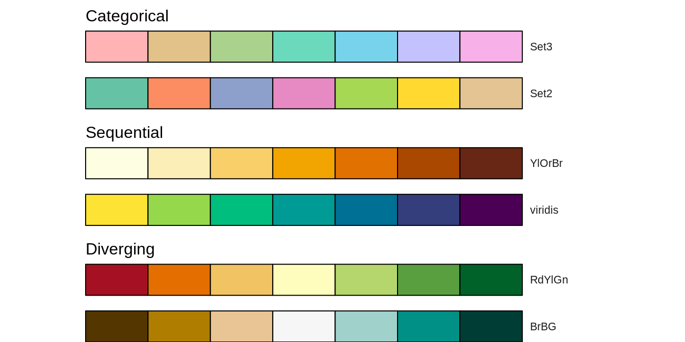
Podemos customizar a escala do eixo x para apresentar as datas de forma personalizada. É importante que, para isso, a variável seja do tipo Date ou Datetime.
Para isso, utilizamos a função scale_x_date(). Ela apresenta alguns argumentos importantes:
breaks: indica a frequência das marcações no eixo x. Alguns exemplos são: "1 month" (marcação a cada mês), "3 months" (marcação a cada 3 meses), “1 year” (marcação a cada ano), entre outros.
date_labels: formato da data que será apresentado. Alguns exemplos são: "%m/%Y" (mês/ano), "%d/%m/%Y" (dia/mês/ano), "%b/%Y" (mês abreviado/ano), entre outros.
Vamos criar um gráfico de linhas para visualizar a evolução da taxa de desocupação desde 2022 para a Bahia, e customizar a escala do eixo x para apresentar as datas de forma a apresentar uma marcação cada 3 meses:
dados |>
filter(uf_sigla == "BA", ano >= 2022) |>
ggplot() +
aes(x = trimestre_inicio, y = perc_desocupacao) +
geom_line() +
geom_point() +
scale_x_date(
breaks = "3 months",
date_labels = "%m/%Y",
minor_breaks = "1 month"
)x.
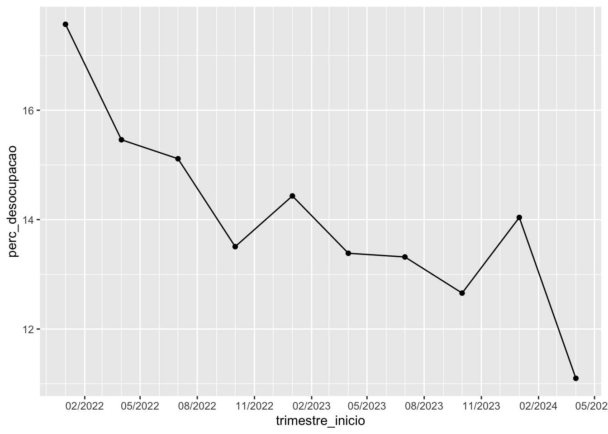
Podemos customizar a escala dos eixos x e/ou y quando estamos mapeando variáveis numéricas utilizando as funções scale_x_continuous() e scale_y_continuous().
O gráfico apresentado no exemplo anterior (onde configuramos a escala de datas) está com o eixo y limitado na faixa onde os dados são encontrados (11% à 18%). Porém, precisamos ter cuidado ao limitar os eixos, pois isso pode distorcer a visualização dos dados.
Podemos definir que o eixo y comece em 0 e termine em 20%, utilizando o argumento limits da função scale_y_continuous():
dados |>
filter(uf_sigla == "BA", ano >= 2022) |>
ggplot() +
aes(x = trimestre_inicio, y = perc_desocupacao) +
geom_line() +
geom_point() +
scale_y_continuous(limits = c(0, 20))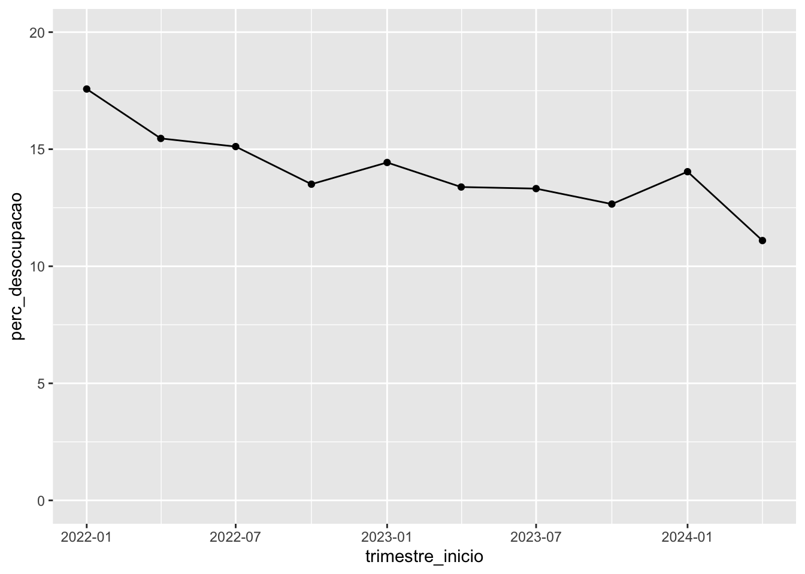
Os gráficos que criamos até aqui utilizam o tema padrão do {ggplot2} (podemos identificar facilmente pelo fundo cinza).
Porém existem funções para customizar o tema dos gráficos, alterando a cor de fundo, a cor dos textos, a fonte, entre outros elementos.
{ggplot2}O {ggplot2} apresenta alguns temas que podem ser utilizados nos gráficos, utilizando funções com o prefixo theme_*():
ls("package:ggplot2") |>
stringr::str_subset("^theme_") [1] "theme_bw" "theme_classic" "theme_dark" "theme_get"
[5] "theme_gray" "theme_grey" "theme_light" "theme_linedraw"
[9] "theme_minimal" "theme_replace" "theme_set" "theme_test"
[13] "theme_update" "theme_void" Por exemplo, podemos alterar o tema do gráfico grafico_ordenado (criado anteriormente) para o tema theme_minimal():
grafico_com_labels +
theme_minimal()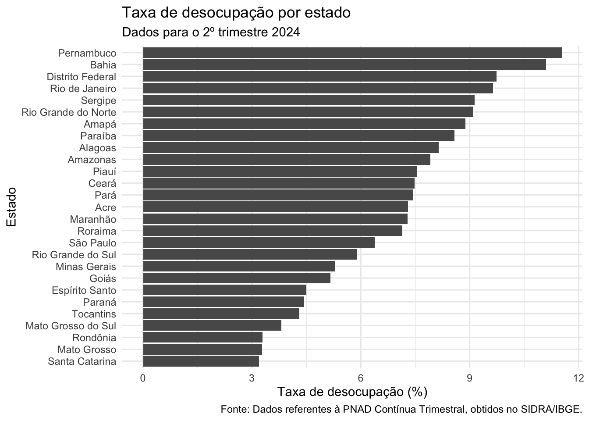
{ggthemes}O pacote {ggthemes} apresenta vários temas adicionais que podem ser utilizados nos gráficos criados com o {ggplot2}.
install.packages("ggthemes")A lista abaixo apresenta os temas disponíveis no pacote {ggthemes}:
library(ggthemes)
ls("package:ggthemes") |>
stringr::str_subset("^theme_") [1] "theme_base" "theme_calc" "theme_clean"
[4] "theme_economist" "theme_economist_white" "theme_excel"
[7] "theme_excel_new" "theme_few" "theme_fivethirtyeight"
[10] "theme_foundation" "theme_gdocs" "theme_hc"
[13] "theme_igray" "theme_map" "theme_pander"
[16] "theme_par" "theme_solarized" "theme_solarized_2"
[19] "theme_solid" "theme_stata" "theme_tufte"
[22] "theme_wsj" Podemos usar o tema theme_economist() para customizar o gráfico grafico_com_labels:
grafico_com_labels +
ggthemes::theme_economist()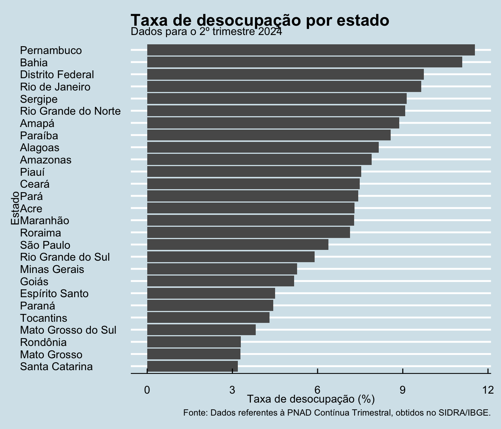
{ipeaplot}O pacote {ipeaplot} apresenta a função theme_ipea() que pode ser utilizada nos gráficos criados com o {ggplot2}.
install.packages("ipeaplot")Podemos usar o tema theme_ipea() para customizar o gráfico abaixo:
dados |>
filter(regiao == "Sul") |>
ggplot() +
aes(x = trimestre_inicio, y = perc_desocupacao, color = uf) +
geom_line() +
ipeaplot::theme_ipea()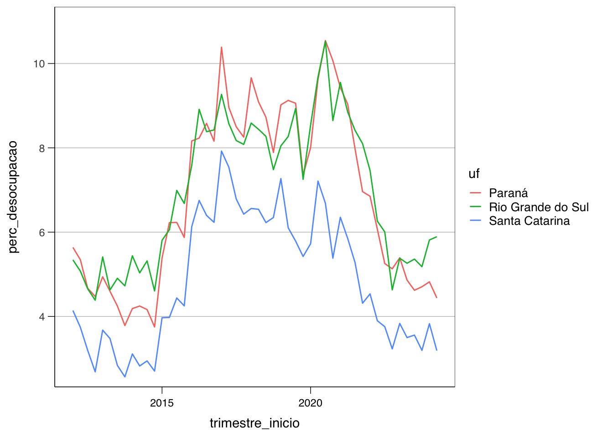
Nos exemplos acima, apresentamos algumas funções para customizar os gráficos criados com o {ggplot2}.
Vamos usar essas funções para customizar o gráfico apresentado no exemplo acima:
grafico_customizado <- dados |>
filter(regiao == "Sul") |>
ggplot() +
aes(x = trimestre_inicio, y = perc_desocupacao, color = uf) +
geom_line() +
ipeaplot::theme_ipea() +
ipeaplot::scale_color_ipea(palette = "Viridis") +
scale_x_date(breaks = "1 year", date_labels = "%Y") +
labs(
title = "Taxa de desocupação por estado na região Sul",
subtitle = "Dados da PNAD Contínua Trimestral",
caption = "Fonte dos dados: SIDRA/IBGE.",
color = "Estado",
x = "Ano",
y = "Taxa de desocupação (%)"
)
grafico_customizadotheme_ipea() do pacote {ipeaplot}.
scale_color_ipea() (do pacote {ipeaplot}) com paleta de cores Orange-Blue.
x: apresentar uma marcação a cada ano.
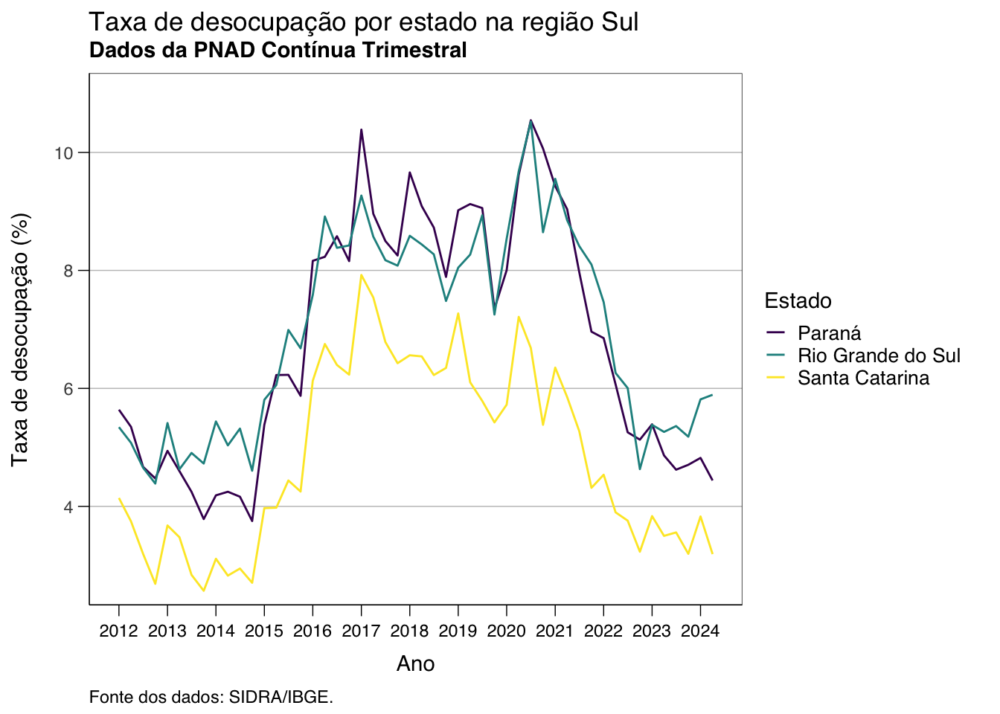
Podemos salvar o gráfico em um arquivo, para utilizá-lo posteriormente. Para isso, criamos um objeto contendo o gráfico que queremos salvar, e utilizamos a função ggsave().
A função ggsave() salva o gráfico em um arquivo, e apresenta dois argumentos principais:
filename: nome do arquivo onde o gráfico será salvo
plot: objeto contendo o gráfico que será salvo
Essa função também apresenta alguns argumentos para customizar como o gráfico será salvo, como:
width: largura do gráfico
height: altura do gráfico
units: unidade de medida para a largura e altura do gráfico
dpi: resolução do gráfico (quanto maior o valor, melhor a qualidade da imagem)
Vamos utilizar o gráfico customizado criado anteriormente (salvo no objeto grafico_customizado), e salvar em um arquivo utilizando a função ggsave():
ggsave(
filename = "graficos/grafico_customizado.png",
plot = grafico_customizado,
width = 7,
height = 5,
dpi = 300
)Podemos verificar se o gráfico foi salvo corretamente, utilizando a função file.exists():
file.exists("graficos/grafico_customizado.png")[1] TRUEOs exemplos que utilizamos mostram um padrão no uso do ggplot2: a base de dados é passada para a função ggplot(), definimos quais variáveis serão mapeadas com a função aes(), e adicionamos uma (ou mais) geometria ao gráfico.
Porém, algo que pode ser trabalhoso é preparar os dados para o gráfico. Nos exemplos que fizemos anteriormente, utilizamos uma tabela já preparada.
No entanto, em muitos casos, precisamos preparar os dados antes de criar o gráfico. Neste caso, muitas funções já vistas em aulas anteriores serão úteis (como filter(), select(), mutate(), group_by(), summarise(), pivot_longer(), pivot_wider(), entre outras). Caso necessário, consulte as aulas Transformando dados e Análise exploratória de dados.
Em Exemplo prático: Visualização, é apresentado um exemplo prático de visualização de dados, onde é feita a preparação dos dados antes de criar o gráfico.
dados_tri_recente, e responda:
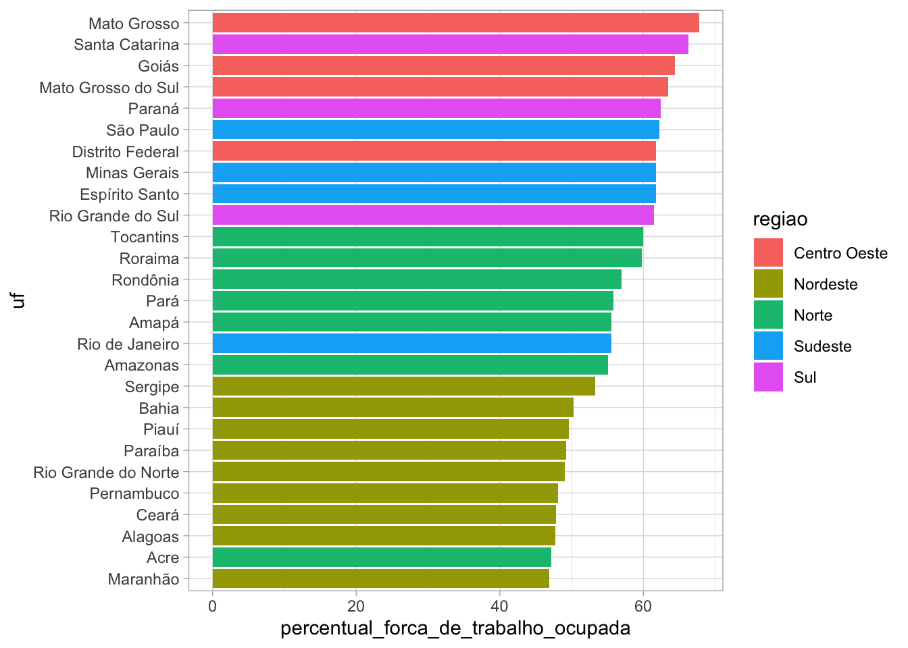
dados_tri_recente |>
ggplot() +
aes(x = perc_desocupacao, y = uf) +
geom_col(aes(fill = "regiao"))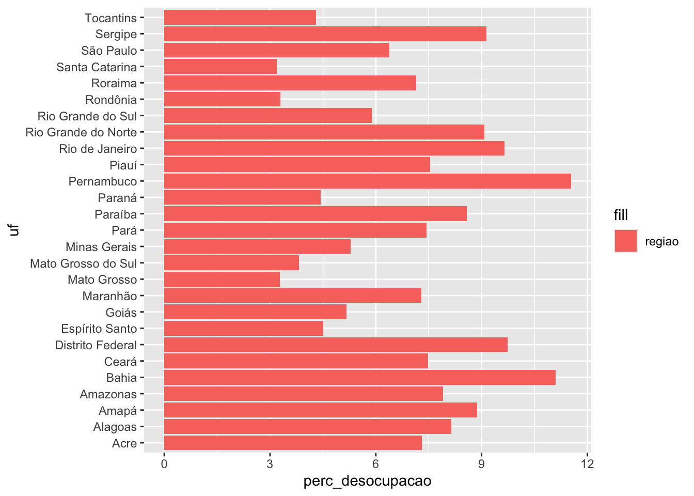
O resultado esperado é:
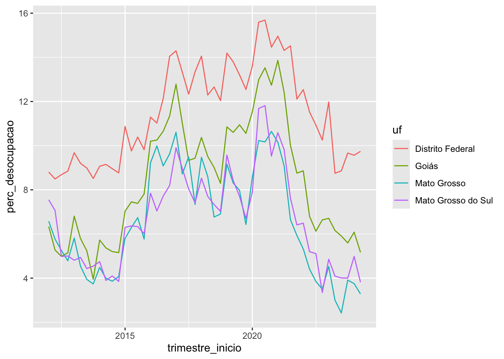
O resultado esperado é:
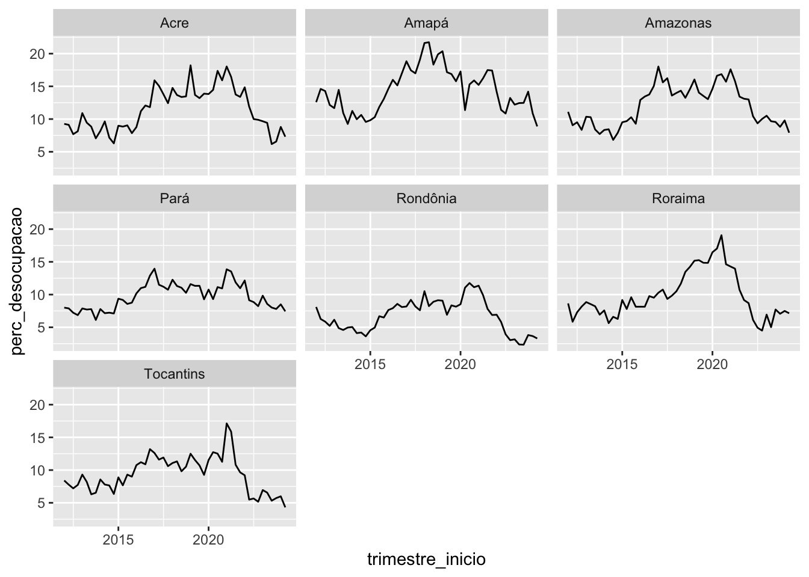
grafico_desocupacao_nordeste. Mapeie os estados na cor das linhas. Com esse objeto, faça as tarefas abaixo:graficos/grafico_desocupacao_nordeste.png.Site from data to viz - galeria de gráficos
R Graph Gallery - Galeria de gráficos
Boxplot:
Sobre gráficos de pizza:
Sugestão de livros:
Grammar of Graphics - livro de Leland Wilkinson, cuja teoria é a base do ggplot2
ggplot2: Elegant Graphics for Data Analysis - livro de Hadley Wickham, criador do ggplot2, Danielle Navarro e Thomas Lin Pedersen (em inglês)
Caso queira saber mais sobre o gráfico de caixa / boxplot, recomendo a leitura deste texto escrito pela Fernanda Peres, sobre como interpretar o boxplot.↩︎